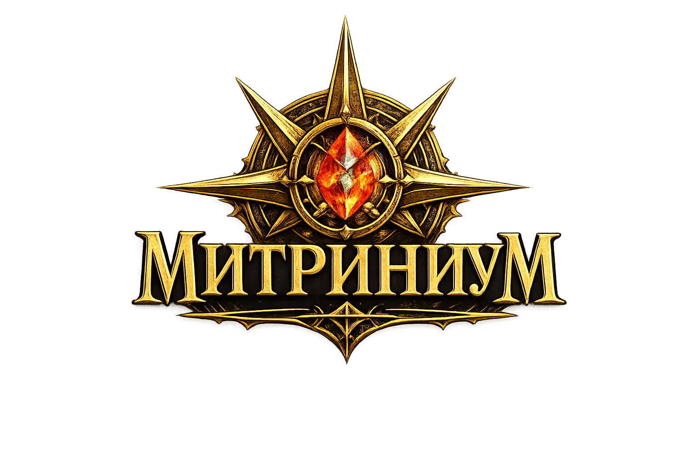

Мир полон надежд
Это не пустошь после конца света. В мире кипит жизнь множества людей, занятых вполне повседневными делами. Все они ждут, что прогресс спасёт их от невзгод и тягот.
Настольная ролевая игра

Мы создаём игру об индустриальном мире, который пережил большую катастрофу и активно адаптируется к изменениям. Здесь работают железные дороги и фабрики, растут города, спорят учёные и чиновники, но за пределами привычных маршрутов всё ещё остаётся место приключениям и нерешенным тайнам.
Этот сайт — краткое введение в замысел проекта. Проект активно развивается, и детали могут измениться.
О проекте
Mitrinium задуман как игра, где мир стоит на распутье. В этом мире нет больше старых устоев. Общество изменилось раз и навсегда, но порядок ещё не устоялся. Возможно, вам решать, что будет дальше.
Это не пустошь после конца света. В мире кипит жизнь множества людей, занятых вполне повседневными делами. Все они ждут, что прогресс спасёт их от невзгод и тягот.
Техника движет общество вперёд, но делает жизнь людей сложнее и опаснее. Огнестрельное оружие уравняло рыцаря и крестьянина, но теперь нет ни царей, ни героев.
Таинственные явления и необычные события становятся частью быта простых жителей, но конфликтуют с рациональным взглядом на мир.
Мир
Визуально и тематически проект соединяет технологии, магию и мистику. По улицам ездят механизированные экипажи, но рядом с фабриками маги в своих алхимических кабинетах ищут разгадки таинственных явлений. Хаотические потоки порождают жизнь там, где её не должно быть, меняют свойства предметов и физические законы.
Игра
Персонажи могут быть инженерами, врачами, стрелками, посредниками, исследователями или специалистами по человеческой психике. Игра строится вокруг совместного решения проблем: расследований, переговоров, работы с опасными веществами и прямых столкновений.
Задачи в Митриниуме могут рассматриваться и как действия персонажей, и как проекты для всей группы.
Многие проблемы в Митриниуме не решаются одномоментно. Система побуждает игроков к планированию и стратегическому мышлению.
Успех не всегда закрывает вопрос. Даже успешное действие может иметь нарративные последствия.
Краткая памятка
Ниже приведена общая схема бросков Эффективности.
Для проверки собирается пул из кубов сцены, подходящего атрибута и навыка. Атрибут и навык добавляют шестигранные кубы.
Единицы считаются отдельно: успех может сопровождаться Осложнением. Высокие грани некоторых кубов могут дать дополнительный Прорыв.
В текущей редакции используются пять широких атрибутов и связанные с ними навыки. Биография персонажа также может один раз за встречу помочь изменить неудачный результат.
Основной особенностью игры является сложная тактическая боёвка и плавающий показатель защиты персонажей. Броня поглощает урон, но изнашивается при попадании.
Каждый класс имеет уникальную кастомизацию снаряжения. Поломки и обслуживание являются частью игрового процесса.
Классы персонажей
Класс задаёт профессиональную основу персонажа, его сильные стороны и типичные инструменты. Он не определяет характер или биографию: два представителя одного класса могут занимать совершенно разное место в обществе и по-разному относиться к своей работе.
Текущий статус
Сейчас мы уточняем базовые правила, классы, снаряжение и особенности приключений. Часть материалов уже существует в рабочем виде, но ещё не считается окончательной. На сайте постепенно будут появляться новые тексты, памятки и материалы.